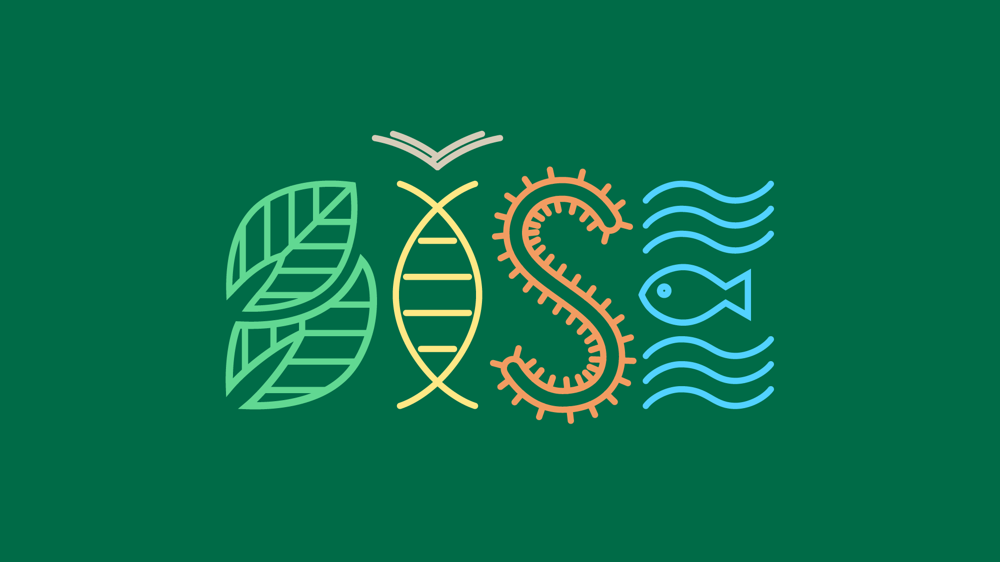
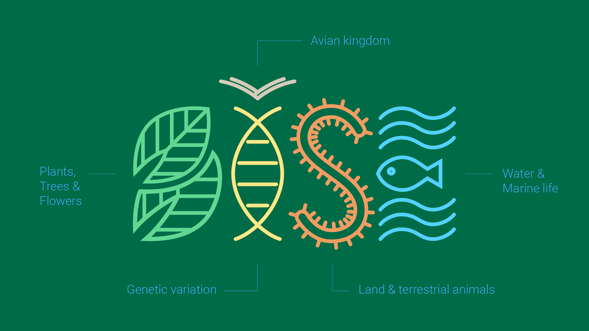
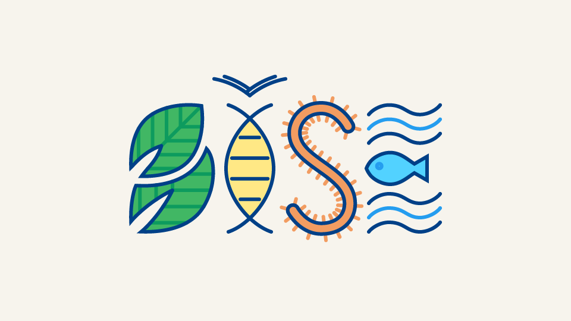
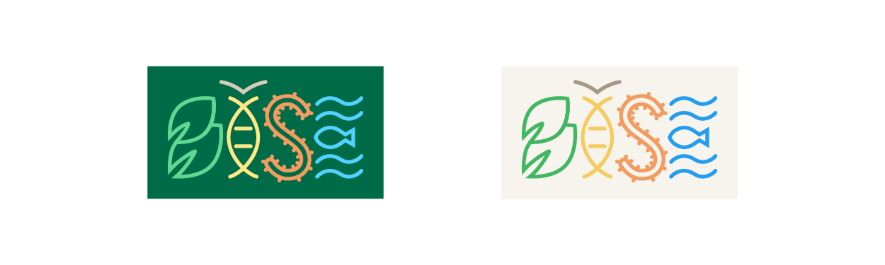
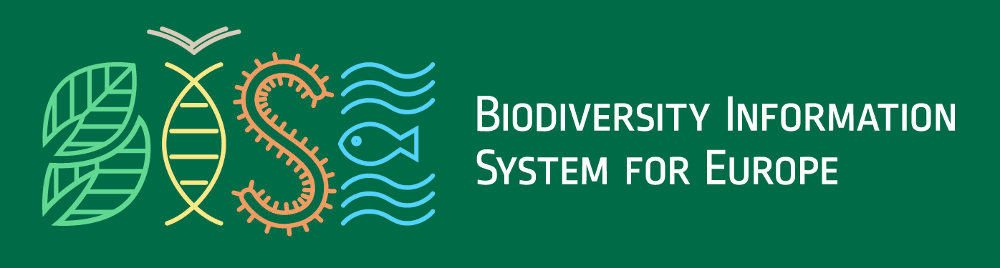
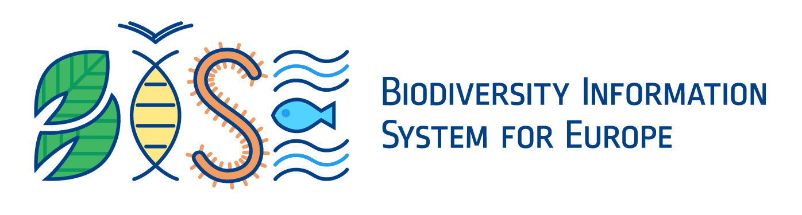

Objectives
- Use the full design vocabulary: color, shape, detail, balance, contrast, symbol and concept, to create a rich and memorable identity
- Exploit the versatility of a modern logo in order to accomodate users on a variety of mediums, traditional or digital
- Show due and full appreciation to biodiversity
Biodiversity
Green circles and leaves is the predominant oversimplifaction of the topic. However, it might be suitable for one branch of the topic. Turning green circles and leaves to color shape and symbol would therefor create the template for the remaining branches of biodiversity.



Smaller logos

The logo looses complexity on smaller sizes to retain legibility.


Avatars
To be used in browser tabs, social media, profile picture, mobile devices icons.
